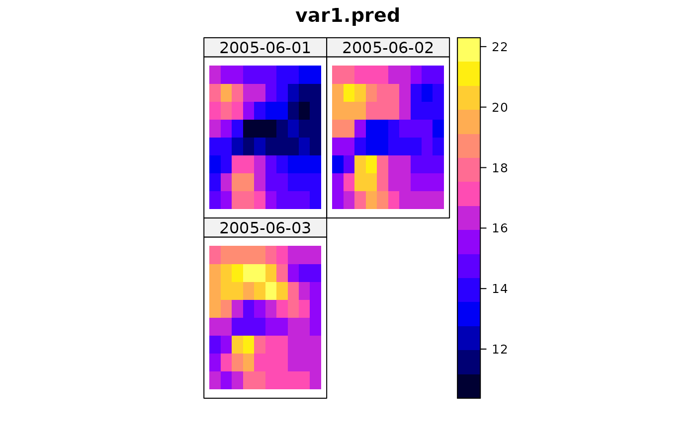

Ordinary global Spatio-Temporal Kriging
krigeST.RdFunction for ordinary global and local and trans Gaussian spatio-temporal kriging on point support
Usage
krigeST(formula, data, newdata, modelList, beta, y, ...,
nmax = Inf, stAni = NULL,
computeVar = FALSE, fullCovariance = FALSE,
bufferNmax=2, progress=TRUE)
krigeSTTg(formula, data, newdata, modelList, y, nmax=Inf, stAni=NULL,
bufferNmax=2, progress=TRUE, lambda = 0)Arguments
- formula
formula that defines the dependent variable as a linear model of independent variables; suppose the dependent variable has name
z, for ordinary and simple kriging use the formulaz~1; for simple kriging also definebeta(see below); for universal kriging, supposezis linearly dependent onxandy, use the formulaz~x+y- data
ST object: should contain the dependent variable and independent variables.
- newdata
ST object with prediction/simulation locations in space and time; should contain attribute columns with the independent variables (if present).
- modelList
object of class
StVariogramModel, created byvgmST- see below or the functionvgmAreaSTfor area-to-point kriging. For the general kriging case: a list with named elements:space,timeand/orjointdepending on the spatio-temporal covariance family, and an entrystModel. Currently implemented families that may be used forstModelareseparable,productSum,metric,sumMetricandsimpleSumMetric. See the examples section infit.StVariogramorvariogramSurfacefor details on how to define spatio-temporal covariance models.krigeSTwill look for a "temporal unit" attribute in the provided modelList in order to adjust the temporal scales.- y
matrix; to krige multiple fields in a single step, pass data as columns of matrix
y. This will ignore the value of the response informula.- beta
The (known) mean for simple kriging.
- nmax
The maximum number of neighbouring locations for a spatio-temporal local neighbourhood
- stAni
a spatio-temporal anisotropy scaling assuming a metric spatio-temporal space. Used only for the selection of the closest neighbours. This scaling needs only to be provided in case the model does not have a stAni parameter, or if a different one should be used for the neighbourhood selection. Mind the correct spatial unit. Currently, no coordinate conversion is made for the neighbourhood selection (i.e. Lat and Lon require a spatio-temporal anisotropy scaling in degrees per second).
- ...
further arguments used for instance to pass the model into vgmAreaST for area-to-point kriging
- computeVar
logical; if TRUE, prediction variances will be returned
- fullCovariance
logical; if FALSE a vector with prediction variances will be returned, if TRUE the full covariance matrix of all predictions will be returned
- bufferNmax
factor with which nmax is multiplied for an extended search radius (default=2). Set to 1 for no extension of the search radius.
- progress
whether a progress bar shall be printed for local spatio-temporal kriging; default=TRUE
- lambda
The value of lambda used in the box-cox transformation.
Details
Function krigeST is a R implementation of the kriging function from
gstat using spatio-temporal covariance models following the
implementation of krige0. Function krigeST offers some
particular methods for ordinary spatio-temporal (ST) kriging. In particular,
it does not support block kriging or kriging in a distance-based
neighbourhood, and does not provide simulation.
If data is of class sftime, then newdata MUST be
of class stars or sftime, i.e. mixing form old-style
classes (package spacetime) and new-style classes (sf, stars, sftime)
is not supported.
Value
An object of the same class as newdata (deriving from
ST). Attributes columns contain prediction and prediction
variance.
References
Benedikt Graeler, Edzer Pebesma, Gerard Heuvelink. Spatio-Temporal Geostatistics using gstat. The R Journal 8(1), 204–218. https://journal.r-project.org/archive/2016/RJ-2016-014/index.html
N.A.C. Cressie, 1993, Statistics for Spatial Data, Wiley.
Pebesma, E.J., 2004. Multivariable geostatistics in S: the gstat package. Computers and Geosciences, 30: 683-691.
Examples
library(sp)
library(spacetime)
sumMetricVgm <- vgmST("sumMetric",
space = vgm( 4.4, "Lin", 196.6, 3),
time = vgm( 2.2, "Lin", 1.1, 2),
joint = vgm(34.6, "Exp", 136.6, 12),
stAni = 51.7)
data(air)
suppressWarnings(proj4string(stations) <- CRS(proj4string(stations)))
rural = STFDF(stations, dates, data.frame(PM10 = as.vector(air)))
rr <- rural[,"2005-06-01/2005-06-03"]
rr <- as(rr,"STSDF")
x1 <- seq(from=6,to=15,by=1)
x2 <- seq(from=48,to=55,by=1)
DE_gridded <- SpatialPoints(cbind(rep(x1,length(x2)), rep(x2,each=length(x1))),
proj4string=CRS(proj4string(rr@sp)))
gridded(DE_gridded) <- TRUE
DE_pred <- STF(sp=as(DE_gridded,"SpatialPoints"), time=rr@time)
DE_kriged <- krigeST(PM10~1, data=rr, newdata=DE_pred,
modelList=sumMetricVgm)
#> Warning: The spatio-temporal variogram model does not carry the strongly recommended attribute 'temporal unit'.
#> The unit 'days' has been assumed. krigeST could not check whether the temporal distances between locations and in the variogram coincide.
gridded(DE_kriged@sp) <- TRUE
stplot(DE_kriged)
